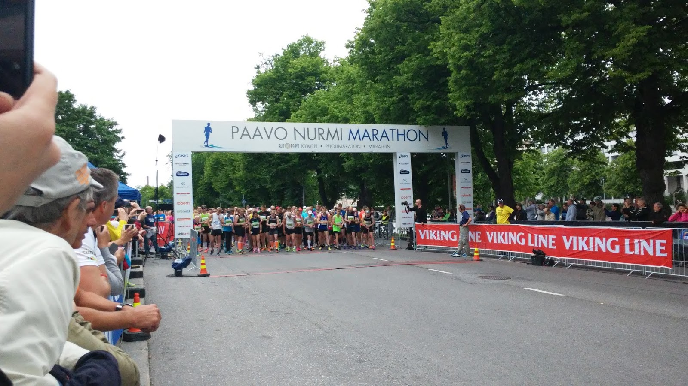

Mitä tapahtuu?
Winter Night Run on kaikille avoin juoksutapahtuma, jossa pääset kokemaan talvisen illan tunnelman valaistulla reitillä Voit osallistua 5 km tai 10 km matkaan omalla tahdillasi.
Ilta-juoksutapahtuma - 5km & 10km
Winter Night Run on kaikille avoin juoksutapahtuma, jossa pääset kokemaan talvisen illan tunnelman valaistulla reitillä Voit osallistua 5 km tai 10 km matkaan omalla tahdillasi.
Aika: lauantaina 14.02.2026 klo 18:00
Paikka: Keskuspuisto, Vaasa
